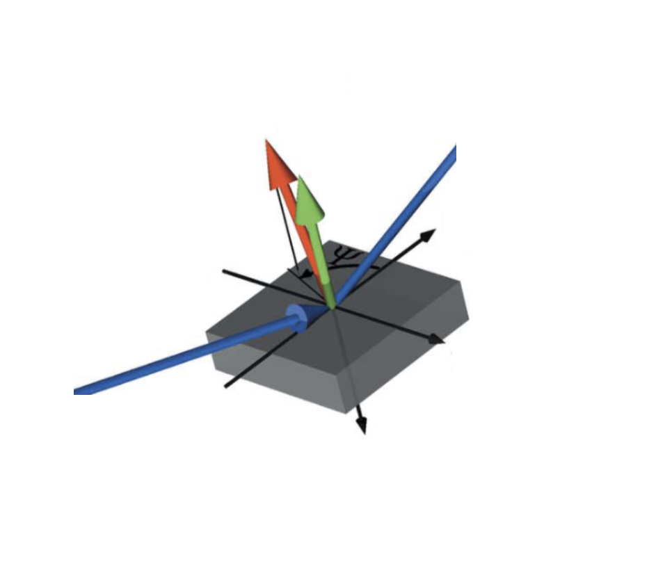

hkl_soleil E6C psi axis#
Show how to set, compute, and scan $\psi$ with the E6C diffractometer
geometry. Use the hkl_soleil solver. Scan
\(\psi\) at fixed \(Q\) and \(hkl_2\).
Virtual axes, such as $\psi$, are features provided by the solver as extras. Extras are not necessarily available in every solver. Consult the solver documentation for details.
NOTE
ⓘ The demonstrations below rely on features provided by the
hkl_soleilsolver.
Concise Summary#
Define an E6C diffractometer object using
hklcomputation engine (the default).Add a sample.
Add two known reflections, and compute its $UB$ matrix
Set $\psi$
Use the
"psi_constant_vertical"mode.Make a dictionary with $hkl_2$ and $\psi$.
Finally, compute the real-space position at $hkl$.
Compute $\psi$
Create a second E6C diffractometer object using the
"psi"computation engine.Copy the $UB$ matrix from the
e6c_hkldiffractometer.Set $hkl_2$. (Since these are simulators, copy the real-space motor positions.)
Show the position of $\psi$.
Scan $\psi$
Run the diffractometer’s custom
scan_extra()plan, specifying both $hkl$ (aspseudos) and $hkl_2$ (asextras).
Overview#
To work with $\psi$ we’ll use the "hkl" engine of the E6C geometry. To compute
$\psi$ we’ll use the "psi" engine. This table summarizes our use:
engine |
how it is used |
|---|---|
|
work in reciprocal-space coordinates $h, k, l$ |
|
compute the $\psi$ rotation angle (not for operations) |
$\psi$ is the rotation of reference vector $hkl_2$ perpendicular to scattering vector $Q$:
color |
description |
|---|---|
blue |
incident and exit X-ray beams |
green |
scattering vector ($Q$) |
red |
reference vector ($hkl_2$) |
yellow |
rotation ($\psi$) from $hkl_2$ around $Q$ |
black |
principle cartesian axes |
gray |
sample |
Steps#
With the
"hkl"engine:Orient a crystalline sample with the
"hkl"engine.Define the azimuthal reflection $h_2, k_2, l_2$ and a $\psi$ rotation.
Position the diffractometer for the $h, k, l$ reflection.
With the
"psi"engine:Copy sample and orientation information from the
"hkl"instance.Copy position information:
This step is necessary since this notebook uses simulated motors.
Diffractometers using EPICS motors will do this automatically.
Compute
psi.Compare the computed
psivalue with the value set with the"hkl"instance.
Scan $\psi$ at fixed $Q$ and $hkl_2$.
Setup E6C Simulators#
Create instances of (simulated) E6C for the "hkl" and "psi" solver engines.
The hklpy2.creator() function creates both.
import hklpy2
e6c_hkl = hklpy2.creator(
name="e6c_hkl",
geometry="E6C",
solver="hkl_soleil",
solver_kwargs={"engine": "hkl"},
)
e6c_psi = hklpy2.creator(
name="e6c_psi",
geometry="E6C",
solver="hkl_soleil",
solver_kwargs={"engine": "psi"},
)
Show the different calculation engines available for the E6C geometry.
print(f"{e6c_hkl.core.solver.engines=}")
e6c_hkl.core.solver.engines=['hkl', 'psi', 'q2', 'qper_qpar', 'tth2', 'incidence', 'emergence']
NOTE
ⓘ The
solverworks at a lower level than ophyd. All the code and structures used by a solver are pure Python code (or calls from Python to lower level libraries.)
Show the different operation modes available with each engine for the E6C geometry.
The hkl engine has a "psi_constant_vertical" mode that can be used to calculate reals given some fixed parameters (UB, wavelength, $(hkl)$, $(hkl)_2$, $\psi$). The psi engine has only one mode.
print(f"{e6c_hkl.core.solver.modes=}")
print(f"{e6c_psi.core.solver.modes=}")
e6c_hkl.core.solver.modes=['bissector_vertical', 'constant_omega_vertical', 'constant_chi_vertical', 'constant_phi_vertical', 'lifting_detector_phi', 'lifting_detector_omega', 'lifting_detector_mu', 'double_diffraction_vertical', 'bissector_horizontal', 'double_diffraction_horizontal', 'psi_constant_vertical', 'psi_constant_horizontal', 'constant_mu_horizontal']
e6c_psi.core.solver.modes=['psi_vertical']
Show the extra axes available with each mode used by this notebook. (The extras have default values at this time.)
The psi engine has a pseudo axis "psi" that can be used to calculate $\psi$ given some fixed parameters (reals, UB, wavelength, $(hkl)$, $(hkl)_2$)
e6c_hkl.core.solver.mode = "bissector_vertical"
print(f"{e6c_hkl.core.solver.mode=}")
print(f"{e6c_hkl.core.solver.extras=}")
e6c_hkl.core.solver.mode = "psi_constant_vertical"
print(f"{e6c_hkl.core.solver.mode=}")
print(f"{e6c_hkl.core.solver.extras=}")
# "psi" engine has only one mode, do not need to set it
print(f"{e6c_psi.core.solver.mode=}")
print(f"{e6c_psi.core.solver.extras=}")
e6c_hkl.core.solver.mode='bissector_vertical'
e6c_hkl.core.solver.extras={}
e6c_hkl.core.solver.mode='psi_constant_vertical'
e6c_hkl.core.solver.extras={'h2': 1.0, 'k2': 0.0, 'l2': 0.0, 'psi': 0.0}
e6c_psi.core.solver.mode='psi_vertical'
e6c_psi.core.solver.extras={'h2': 1.0, 'k2': 1.0, 'l2': 1.0}
Define and orient a sample#
The sample for this notebook is crystalline vibranium, with a cubic lattice of exactly $2\pi$. With it mounted on oru diffractometer, we have identified two reflections which define its orientation.
import math
e6c_hkl.wavelength.put(1.54) # angstrom (8.0509 keV)
e6c_hkl.add_sample("vibranium", 2 * math.pi, digits=5)
e6c_hkl.add_reflection((4, 0, 0), (0, 29.354, 0, 2, 0, 58.71), name="r400")
e6c_hkl.add_reflection((0, 4, 0), (0, 29.354, 0, 92, 0, 58.71), name="r040")
for r in e6c_hkl.sample.reflections.order:
print(f"{e6c_hkl.sample.reflections[r]}")
e6c_hkl.core.calc_UB(*e6c_hkl.sample.reflections.order)
print(f"{e6c_hkl.core.solver.UB=!r}")
print(f"{e6c_hkl.core.solver.U=!r}")
Reflection(name='r400', h=4, k=0, l=0)
Reflection(name='r040', h=0, k=4, l=0)
e6c_hkl.core.solver.UB=[[0.034882054037, 0.999391435978, -0.0], [0.0, 0.0, 1.0], [0.999391435978, -0.034882054037, -0.0]]
e6c_hkl.core.solver.U=[[0.034882054037, 0.999391435978, 0.0], [0.0, 0.0, 1.0], [0.999391435978, -0.034882054037, 0.0]]
Move to the $(111)$ orientation#
Before moving the diffractometer, ensure you have selected the desired operating mode.
e6c_hkl.core.solver.mode = "bissector_vertical"
e6c_hkl.move(1, 0, 0)
e6c_hkl.position, e6c_hkl.real_position
(Hklpy2DiffractometerPseudoPos(h=1.00000000737, k=-8.2488e-08, l=0),
Hklpy2DiffractometerRealPos(mu=0, omega=7.039253278732, chi=0, phi=1.998995273774, gamma=0, delta=14.078506557465))
Set ${hkl}_2$ and $\psi$#
Show the extra axes available with psi_constant_vertical mode.
e6c_hkl.core.solver.mode = "psi_constant_vertical"
print(f"{e6c_hkl.core.solver.extra_axis_names=}")
e6c_hkl.core.solver.extra_axis_names=['h2', 'k2', 'l2', 'psi']
Set azimuthal reflection ${hkl}_2 = (110)$ and $\psi=12$.
The extras are described as a Python dictionary with values for each of the parameters.
e6c_hkl.core.solver.extras = dict(h2=1, k2=1, l2=0, psi=12)
print(f"{e6c_hkl.core.solver.extras=}")
e6c_hkl.core.solver.extras={'h2': 1.0, 'k2': 1.0, 'l2': 0.0, 'psi': 12.0}
Compute the real-axis motor values with the $Q=(111)$ reflection oriented and $\psi$ rotation.
p_111 = e6c_hkl.forward(1, 1, 1)
print(f"{p_111=}")
p_111=Hklpy2DiffractometerRealPos(mu=0, omega=66.391607045543, chi=99.77381778179, phi=-49.997332854697, gamma=0, delta=24.509844391025)
Move each real (real-space positioner) to the computed $(111)$ reflection position p_111.
e6c_hkl.move_reals(p_111)
print(f"{e6c_hkl.position=}")
print(f"{e6c_hkl.real_position=}")
print(f"{e6c_hkl.core.solver.extras=}")
e6c_hkl.position=Hklpy2DiffractometerPseudoPos(h=1.000000009255, k=0.999999994159, l=0.999999984039)
e6c_hkl.real_position=Hklpy2DiffractometerRealPos(mu=0, omega=66.391607045543, chi=99.77381778179, phi=-49.997332854697, gamma=0, delta=24.509844391025)
e6c_hkl.core.solver.extras={'h2': 1.0, 'k2': 1.0, 'l2': 0.0, 'psi': 12.0}
Compute $\psi$ at fixed $Q$ and $hkl_2$#
We’ll use the "psi" engine to compute $\psi$, given a sample & orientation,
${hkl}_2$, and the real-space motor positions.
print(f"{e6c_psi.core.solver.mode=}")
print(f"{e6c_psi.core.solver.extras=}")
e6c_psi.core.solver.mode='psi_vertical'
e6c_psi.core.solver.extras={'h2': 1.0, 'k2': 1.0, 'l2': 1.0}
Same sample and lattice
e6c_psi.add_sample("vibranium", 2 * math.pi, digits=5)
Sample(name='vibranium', lattice=Lattice(a=6.28319, system='cubic'))
Copy orientation from hkl instance. Note the psi and hkl UB matrices are
not exactly equal. Equal to about 5 decimal places.)
e6c_psi.core.solver.UB = e6c_hkl.core.solver.UB
print(f"{e6c_psi.core.solver.UB=!r}")
print(f"{e6c_psi.core.solver.U=!r}")
print(f"{e6c_hkl.core.solver.UB=!r}")
print(f"{e6c_hkl.core.solver.U=!r}")
e6c_psi.core.solver.UB=[[0.034882112737, 0.999391462637, -7.7669e-08], [-1.1035e-07, 3.7043e-08, 0.999999954315], [0.999391567978, -0.034881973051, -8.4609e-08]]
e6c_psi.core.solver.U=[[0.034882108064, 0.999391434092, -3.3171e-08], [-1.1035e-07, 3.7043e-08, 1.0], [0.999391434092, -0.034882108064, 1.11575e-07]]
e6c_hkl.core.solver.UB=[[0.034882054037, 0.999391435978, -0.0], [0.0, 0.0, 1.0], [0.999391435978, -0.034882054037, -0.0]]
e6c_hkl.core.solver.U=[[0.034882054037, 0.999391435978, 0.0], [0.0, 0.0, 1.0], [0.999391435978, -0.034882054037, 0.0]]
Set ${hkl}_2=(1, 1, 0)$. As above, describe these parameters in a Python dictionary.
e6c_psi.core.solver.extras = dict(h2=1, k2=1, l2=0)
print(f"{e6c_psi.core.solver.extras=}")
e6c_psi.core.solver.extras={'h2': 1.0, 'k2': 1.0, 'l2': 0.0}
Set real-space axis positions from p_111 (above).
e6c_psi.move_reals(p_111)
print(f"{e6c_psi.pseudo_axis_names=}")
print(f"{e6c_psi.core.solver.pseudo_axis_names=}")
print(f"{e6c_psi.position=}")
print(f"{e6c_psi.real_position=}")
e6c_psi.pseudo_axis_names=['psi']
e6c_psi.core.solver.pseudo_axis_names=['psi']
e6c_psi.position=Hklpy2DiffractometerPseudoPos(psi=11.999993753339)
e6c_psi.real_position=Hklpy2DiffractometerRealPos(mu=0, omega=66.391607045543, chi=99.77381778179, phi=-49.997332854697, gamma=0, delta=24.509844391025)
Compare hkl and psi reports.
print(e6c_hkl)
e6c_hkl.wh()
print(e6c_psi)
e6c_psi.wh()
Hklpy2Diffractometer(prefix='', name='e6c_hkl', settle_time=0.0, timeout=None, egu='', limits=(0, 0), source='computed', read_attrs=['h', 'h.readback', 'h.setpoint', 'k', 'k.readback', 'k.setpoint', 'l', 'l.readback', 'l.setpoint', 'mu', 'omega', 'chi', 'phi', 'gamma', 'delta'], configuration_attrs=['geometry', 'solver', 'wavelength', 'h', 'k', 'l'], concurrent=True)
h=1.0, k=1.0, l=1.0
wavelength=1.54
mu=0, omega=66.3916, chi=99.7738, phi=-49.9973, gamma=0, delta=24.5098
h2=1.0 k2=1.0 l2=0 psi=12.0
Hklpy2Diffractometer(prefix='', name='e6c_psi', settle_time=0.0, timeout=None, egu='', limits=(0, 0), source='computed', read_attrs=['psi', 'psi.readback', 'psi.setpoint', 'mu', 'omega', 'chi', 'phi', 'gamma', 'delta'], configuration_attrs=['geometry', 'solver', 'wavelength', 'psi'], concurrent=True)
psi=12.0
wavelength=1.0
mu=0, omega=66.3916, chi=99.7738, phi=-49.9973, gamma=0, delta=24.5098
h2=1.0 k2=1.0 l2=0
Scan $\psi$ at fixed $Q$ and $hkl_2$#
Setup the bluesky tools needed to run scans and review data.
import databroker
from bluesky import RunEngine
from bluesky.callbacks.best_effort import BestEffortCallback
from ophyd.sim import noisy_det
from hklpy2 import ConfigurationRunWrapper
# Save orientation of the diffractometer.
crw = ConfigurationRunWrapper(e6c_hkl)
bec = BestEffortCallback()
bec.disable_plots()
cat = databroker.temp().v2
RE = RunEngine()
RE.subscribe(cat.v1.insert)
RE.subscribe(bec)
RE.preprocessors.append(crw.wrapper)
Scan $\psi$ over a wide range in coarse steps.
NOTE
ⓘ Since $\psi$ is an extra axis, it is only available with certain operation modes, such as
"psi_constant_vertical". Be sure to set that before scanning. The plan will raise aKeyErrorif the axis name is not recognized. Any extra axes are not ophyd objects since they are defined only when certain modes are selected. A custom plan is provided which scans an extra axis, while holding any pseudos or reals, and other extras at constant values.
This example chooses $Q=(002)$ and $hkl_2=(120)$. (The reference $hkl_2$
was chosen to be perpendicular to $Q$.) Save the uid from the scan for later
reference.
To control the solution space, we adjust the low limit of both $\phi$ and $\omega$ so their ranges are limited to $0..180^o$.
The e6c_hkl diffractometer is added as a detector here so that all the
positioner values will be available for plotting later.
e6c_hkl.core.solver.mode = "psi_constant_vertical"
e6c_hkl.core.constraints["phi"].low_limit = 0
e6c_hkl.core.constraints["omega"].low_limit = 0
(uid,) = RE(
e6c_hkl.scan_extra(
[noisy_det, e6c_hkl],
axis="psi",
start=0.1,
finish=150,
num=15,
pseudos=dict(h=0, k=0, l=2),
extras=dict(h2=1, k2=2, l2=0),
),
)
Transient Scan ID: 1 Time: 2025-03-03 02:39:38
Persistent Unique Scan ID: '746aac09-c5d3-495c-90f5-60cf02d22794'
New stream: 'primary'
+-----------+------------+--------------------+------------+------------+------------+------------+------------+---------------+-------------+-------------+---------------+---------------+
| seq_num | time | e6c_hkl_extras_psi | noisy_det | e6c_hkl_h | e6c_hkl_k | e6c_hkl_l | e6c_hkl_mu | e6c_hkl_omega | e6c_hkl_chi | e6c_hkl_phi | e6c_hkl_gamma | e6c_hkl_delta |
+-----------+------------+--------------------+------------+------------+------------+------------+------------+---------------+-------------+-------------+---------------+---------------+
| 1 | 02:39:38.7 | 0.100 | 0.904 | -0.000 | -0.000 | 2.000 | 0 | 165.812 | 90.000 | 155.334 | 0 | -28.375 |
| 2 | 02:39:38.7 | 10.807 | 1.053 | 0.000 | 0.000 | 2.000 | 0 | 165.812 | 90.000 | 144.627 | 0 | -28.375 |
| 3 | 02:39:38.7 | 21.514 | 1.017 | -0.000 | 0.000 | 2.000 | 0 | 165.812 | 90.000 | 133.920 | 0 | -28.375 |
| 4 | 02:39:38.7 | 32.221 | 1.052 | -0.000 | 0.000 | 2.000 | 0 | 165.812 | 90.000 | 123.213 | 0 | -28.375 |
| 5 | 02:39:38.7 | 42.929 | 1.015 | 0.000 | 0.000 | 2.000 | 0 | 165.812 | 90.000 | 112.505 | 0 | -28.375 |
| 6 | 02:39:38.7 | 53.636 | 0.931 | -0.000 | 0.000 | 2.000 | 0 | 165.812 | 90.000 | 101.798 | 0 | -28.375 |
| 7 | 02:39:38.7 | 64.343 | 0.963 | -0.000 | -0.000 | 2.000 | 0 | 165.812 | 90.000 | 91.091 | 0 | -28.375 |
| 8 | 02:39:38.7 | 75.050 | 1.099 | -0.000 | 0.000 | 2.000 | 0 | 165.812 | 90.000 | 80.384 | 0 | -28.375 |
| 9 | 02:39:38.7 | 85.757 | 1.006 | -0.000 | 0.000 | 2.000 | 0 | 165.812 | 90.000 | 69.677 | 0 | -28.375 |
| 10 | 02:39:38.7 | 96.464 | 1.031 | 0.000 | 0.000 | 2.000 | 0 | 165.812 | 90.000 | 58.970 | 0 | -28.375 |
| 11 | 02:39:38.7 | 107.171 | 1.067 | -0.000 | -0.000 | 2.000 | 0 | 165.812 | 90.000 | 48.263 | 0 | -28.375 |
| 12 | 02:39:38.7 | 117.879 | 1.076 | -0.000 | -0.000 | 2.000 | 0 | 165.812 | 90.000 | 37.555 | 0 | -28.375 |
| 13 | 02:39:38.7 | 128.586 | 1.072 | -0.000 | 0.000 | 2.000 | 0 | 165.812 | 90.000 | 26.848 | 0 | -28.375 |
| 14 | 02:39:38.7 | 139.293 | 0.959 | 0.000 | -0.000 | 2.000 | 0 | 165.812 | 90.000 | 16.141 | 0 | -28.375 |
| 15 | 02:39:38.7 | 150.000 | 1.088 | 0.000 | -0.000 | 2.000 | 0 | 165.812 | 90.000 | 5.434 | 0 | -28.375 |
+-----------+------------+--------------------+------------+------------+------------+------------+------------+---------------+-------------+-------------+---------------+---------------+
generator scan_extra ['746aac09'] (scan num: 1)
Plot any motions#
The only real-space axis to be moved by this scan is $\phi$. Plot $\phi$ vs. $\psi$.
axis |
data name |
|---|---|
$\phi$ |
|
$\psi$ |
|
NOTE
ⓘ Extra axes are named with the
_extraslabel inserted in the name.
from apstools.utils import plotxy
run = cat[uid]
# Compose a title from current conditions.
pos = e6c_hkl.full_position(digits=0)
Q = f"({pos['h']:.0f}, {pos['k']:.0f}, {pos['l']:.0f})"
hkl2 = f"({pos['h2']:.0f}, {pos['k2']:.0f} ,{pos['l2']:.0f})"
title = f"$Q={Q}$ and $hkl_2={hkl2}$"
plotxy(run, "e6c_hkl_extras_psi", "e6c_hkl_phi", stats=False, title=title)
/home/prjemian/.conda/envs/bluesky_2025_1/lib/python3.11/site-packages/databroker/intake_xarray_core/base.py:23: FutureWarning: The return type of `Dataset.dims` will be changed to return a set of dimension names in future, in order to be more consistent with `DataArray.dims`. To access a mapping from dimension names to lengths, please use `Dataset.sizes`.
'dims': dict(self._ds.dims),